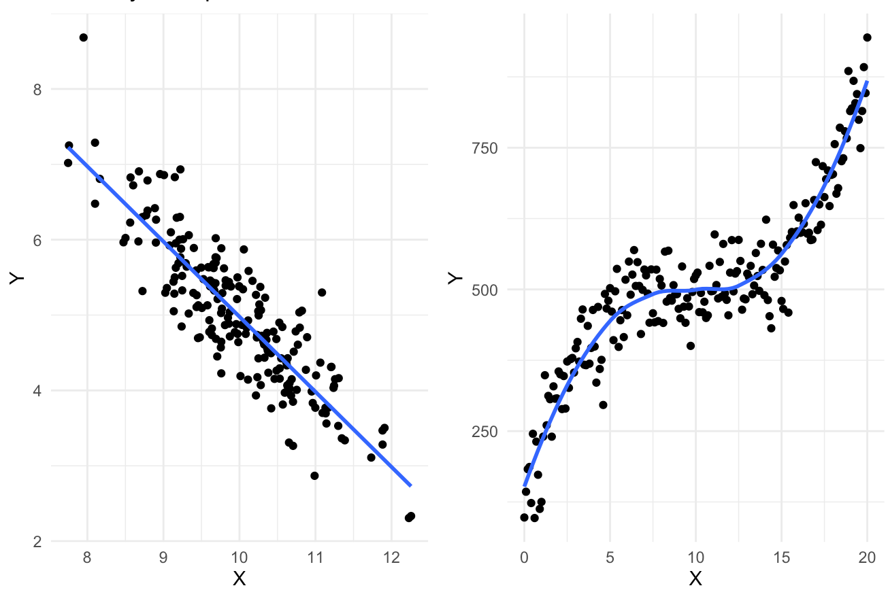
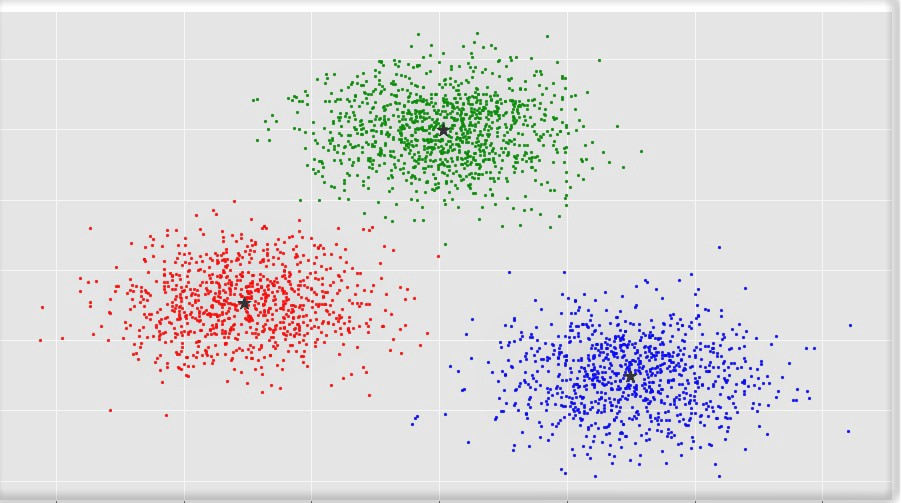

My research is typically focused on identifying the relationship between an Independent variable and a Dependent variable.
Most regression models I build are multivariate and try to look at the impact of the IV while holding other variables constant.
Multivariate Linear regression and mediation analysis are commonly used models in my work.

I have utilized several classification techniques in my research such as logistic regression, naive Bayes classifier,
and textual sentiment analysis. I am also familiar with decision trees, and k-nearest neighbor

I have several projects utilizing an experimental design and I am well-versed in methods of causal inference. I typically use simple tests
such as t-tests or Analysis of Variance (ANOVA) to analyze experimental data.